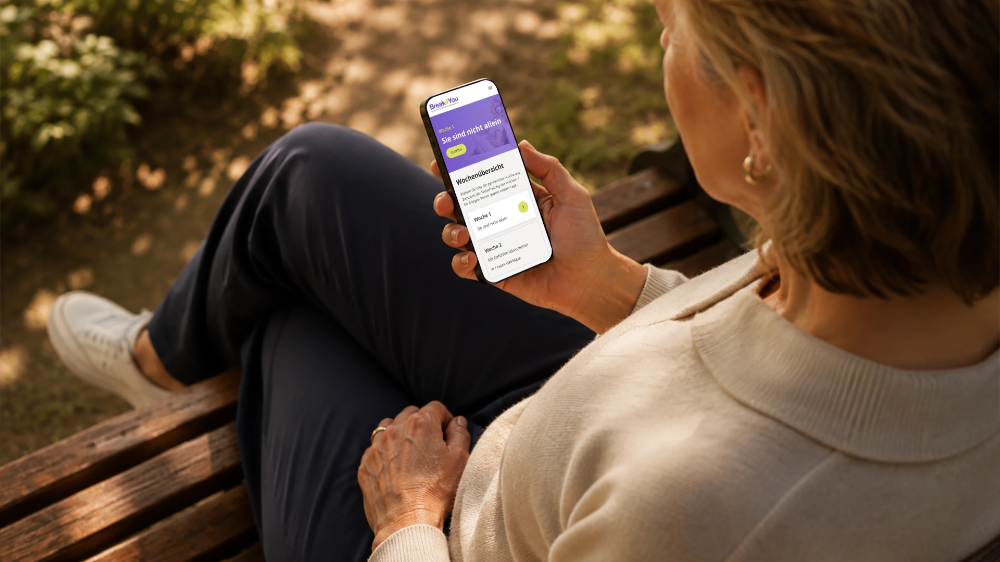
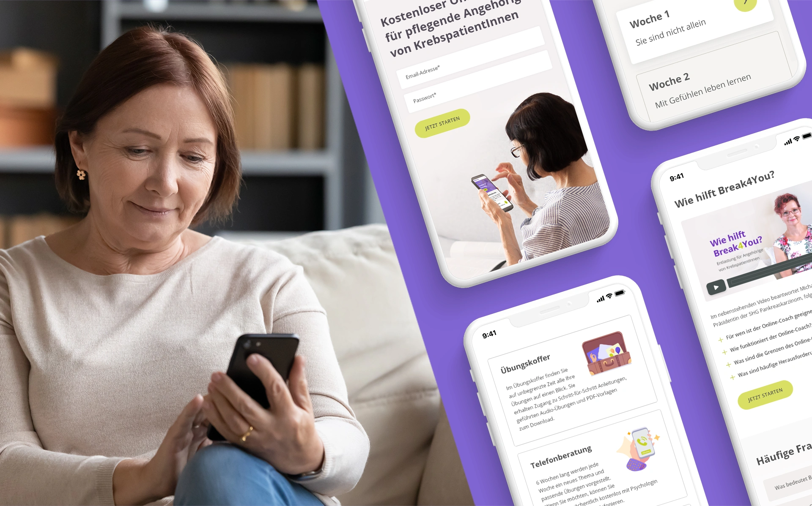
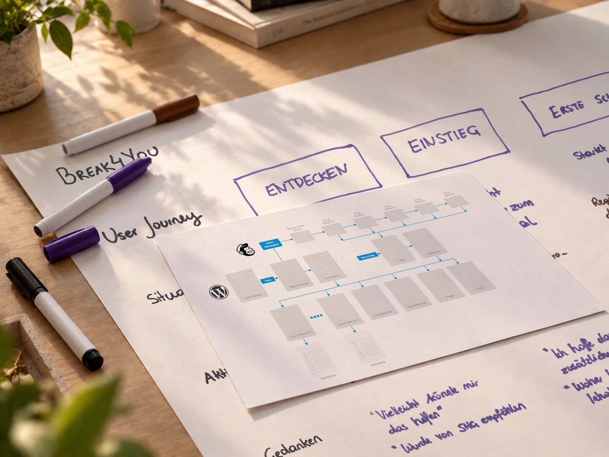
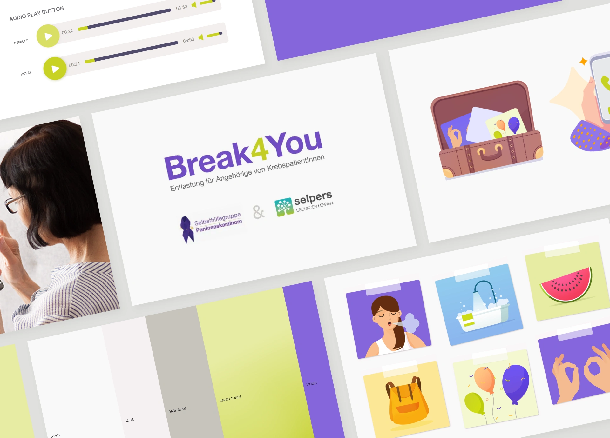
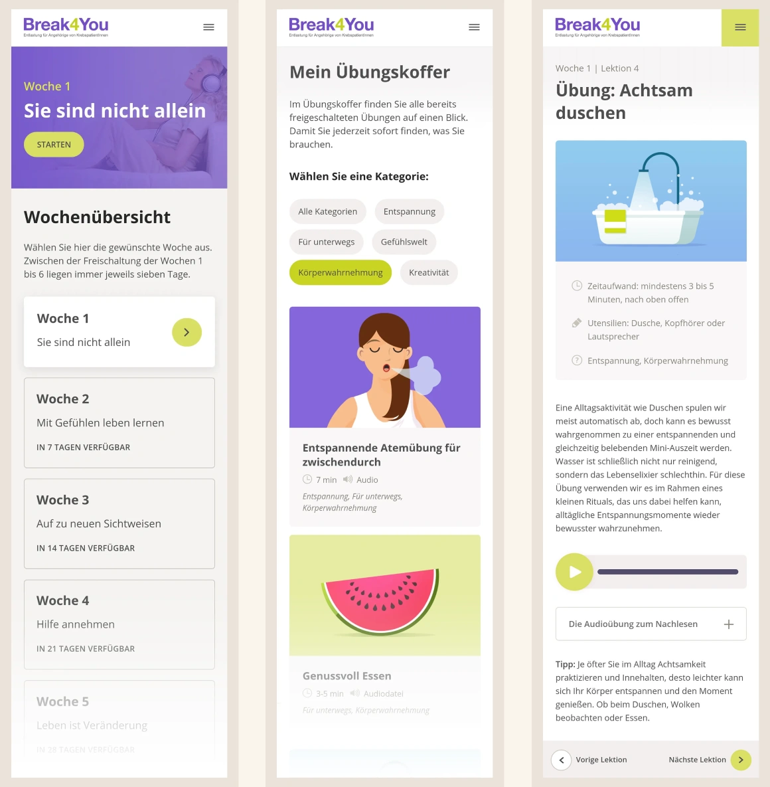
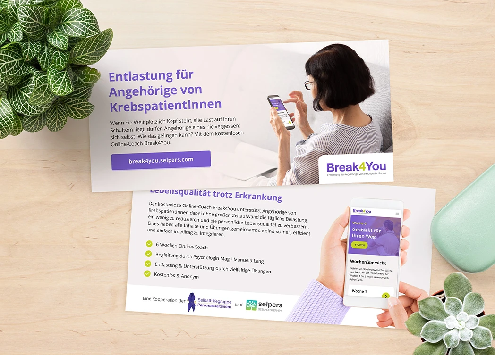

Break4You is a free online coach for people caring for a relative with advanced cancer — a group under enormous emotional and physical strain who rarely take time for themselves. Developed as a collaboration between the Austrian Pancreatic Cancer Support Group and selpers, the platform needed to provide practical support while feeling approachable, reassuring and easy to use.
As Lead Designer, I was responsible for shaping the product from the first concept through to launch, combining branding, UX/UI design and visual communication into one cohesive experience.

Concept & Branding


The Experience

